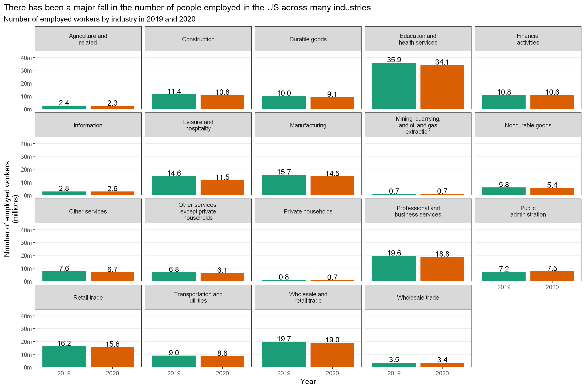
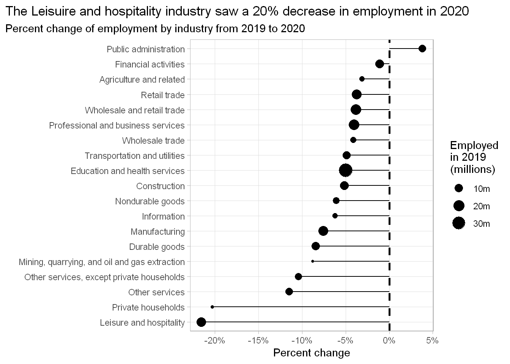
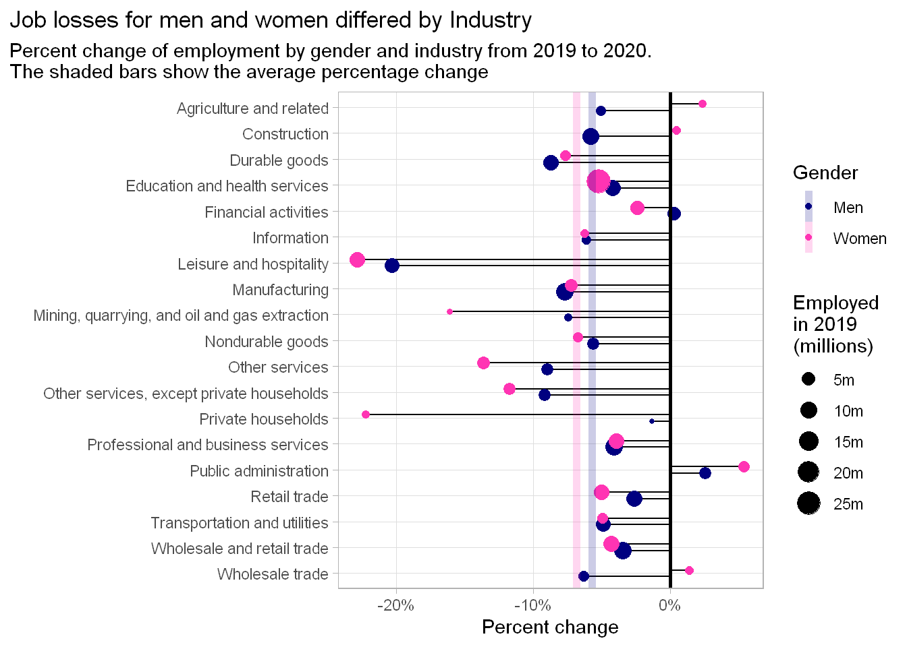
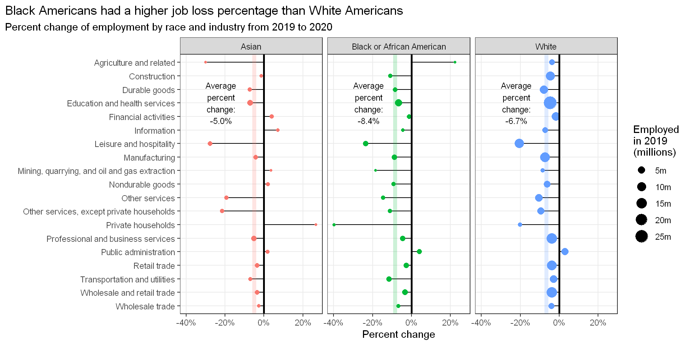
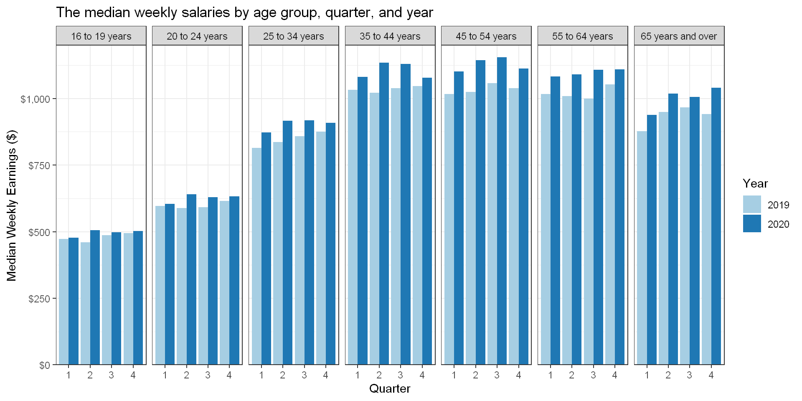
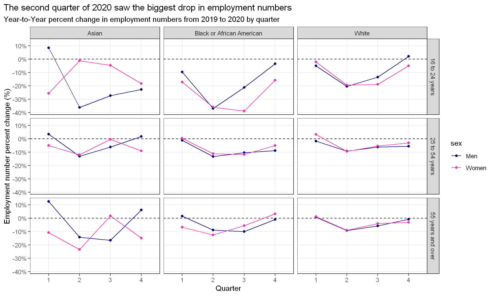
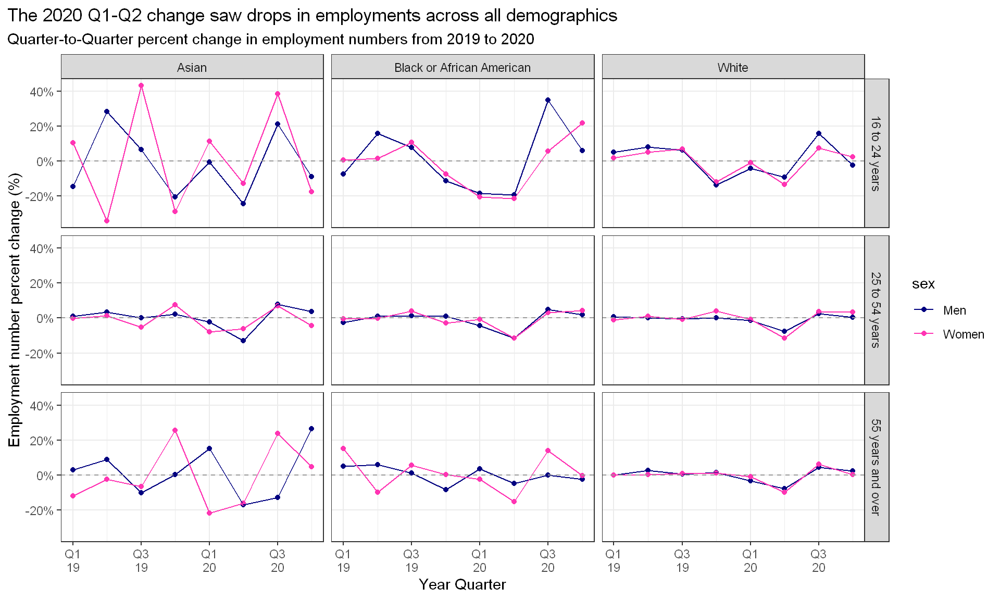

This blogpost will look at the 2021-02-23 edition of Tidy Tuesday. There are two datasets to explore; employed and earn, we will explore employed first and look at the second later in this post - they both deal with the number of people employed, broken down in several ways; in the case of employed, the number is broken down by industry, sex and race, whereas the earn dataset breaks down employment numbers by age, sex and race.
We are interested in the effects the Covid-19 pandemic has had on employment numbers across different industries and demographics.
We will start off by looking at the employed dataset.
library(tidyverse)
library(zoo) # for dealing with quarterly data
employed <- readr::read_csv('https://raw.githubusercontent.com/rfordatascience/tidytuesday/master/data/2021/2021-02-23/employed.csv')
employed <- employed %>%
na.omit() %>%
mutate(industry = str_replace_all(industry,"\r\n"," "),
minor_occupation = str_remove_all(minor_occupation,"-"),
category = case_when( race_gender == "TOTAL" ~ "Total",
race_gender %in% c("Men","Women") ~ "Gender",
race_gender %in% c("Asian","Black or African American","White") ~ "Race"))employed %>%
filter(category == "Total",
year %in% c(2019,2020)) %>%
select(industry,industry_total,year) %>%
mutate(year = as.factor(year)) %>%
unique() %>%
ggplot(aes(x=year,y=industry_total,fill=year))+
geom_col(show.legend = FALSE)+
geom_text(aes(label= scales::number(industry_total,scale = 1e-6,accuracy = .1 ) ),vjust=-0.1 )+
scale_y_continuous(limits=c(0,4.5e7), expand=c(0,NA),labels = scales::number_format(scale=1e-6,suffix = "m"))+
facet_wrap(.~industry ,labeller = label_wrap_gen(width=20,multi_line = TRUE) )+
scale_fill_brewer(palette="Dark2",direction = 1)+
labs(title="There has been a major fall in the number of people employed in the US across many industries",
subtitle = "Number of employed workers by industry in 2019 and 2020",
x="Year",y="Number of employed workers\n(millions)")+
theme_bw()+
theme(panel.grid.major.x = element_blank(),
panel.grid.minor.y = element_blank(),
plot.title.position = "plot")
Across many industries, there has been a fall in the number of people employed from 2019 to 2020.
If we want to see which industries were hurt the most by the pandemic, we should look at the percent change.
employed %>%
filter(category == "Total",
year %in% c(2019,2020)) %>%
select(industry,industry_total,year) %>%
unique() %>%
group_by(industry) %>%
pivot_wider(names_from = year,values_from = industry_total,names_prefix = "y") %>%
mutate( pct_change = (y2020-y2019)/y2019) %>%
ggplot(aes(x=pct_change,y=reorder(industry,pct_change)))+
geom_point(aes(size=y2019))+
geom_linerange(aes(xmin = 0, xmax = pct_change))+
geom_vline(xintercept = 0,lty=2,size=1)+
scale_size_continuous(labels = scales::number_format(scale = 1e-6,accuracy = 1,suffix = "m"))+
scale_x_continuous(labels=scales::percent_format(accuracy = 1))+
labs(title="The Leisuire and hospitality industry saw a 20% decrease in employment in 2020",
subtitle = "Percent change of employment by industry from 2019 to 2020",
x="Percent change",y="",size="Employed\nin 2019\n(millions)")+
theme_light()+
theme(plot.title.position = "plot",
panel.grid.minor.x = element_blank())
We see that the industry with the biggest relative reduction in employment is the Leisure and hospitality industry. They saw a drop over 20% in 2020 when compared to 2019.
Of the industries that saw a decrease - they dropped, on average, by 7.6%.
Interestingly, there was an increase in the number of people working in the Public administration industry, but this was below a 5% increase.
Let’s look at the breakdown by gender
employed %>%
filter(category == "Gender",
year %in% c(2019,2020)) %>%
select(industry,industry_total,race_gender,year) %>%
unique() %>%
group_by(industry) %>%
pivot_wider(names_from = year,values_from = industry_total,names_prefix = "y") %>%
mutate( pct_change = (y2020-y2019)/y2019) %>%
ungroup() %>%
mutate( industry = fct_rev(industry) ) %>%
ggplot(aes(x=pct_change,y=industry ))+
geom_linerange(aes(xmin = 0, xmax = pct_change,group=race_gender),
position = position_dodge(width = .5))+
geom_point(aes(col=race_gender,group=race_gender,size=y2019),
position = position_dodge(width = .5))+
geom_vline(xintercept = 0,lty=1,size=1)+
geom_vline( . %>% ungroup() %>% group_by(race_gender) %>%
summarise(avg_pct_change = mean(pct_change),.groups = "drop"),
mapping=aes(xintercept=avg_pct_change,col=race_gender),lty=1,size=2,alpha=0.2)+
scale_x_continuous(labels=scales::percent_format(accuracy = 1))+
scale_size_continuous(labels = scales::number_format(scale = 1e-6,accuracy = 1,suffix = "m"))+
scale_color_manual(values = c("Men"="navy",
"Women"="maroon1"))+
guides(size=guide_legend(order=2,title="Employed\nin 2019\n(millions)"),color=guide_legend(order=1,title = "Gender") )+
labs(title="Job losses for men and women differed by Industry",
subtitle = "Percent change of employment by gender and industry from 2019 to 2020.\nThe shaded bars show the average percentage change",
x="Percent change",y="",fill = "Percent\nchange")+
theme_light()+
theme(plot.title.position = "plot",
panel.grid.minor.x = element_blank())
Now we can see a further breakdown by gender, and see that job losses by industry were not the same for both genders. For example, women faced relatively more job loses than men in the Leisure and hospitality industry, as well as in Private households. Another example is that men saw a drop in employment in the Wholesale trade industry, whereas women saw an increase.
employed %>%
filter(category == "Race",
year %in% c(2019,2020)) %>%
select(industry,industry_total,race_gender,year) %>%
unique() %>%
group_by(industry) %>%
pivot_wider(names_from = year,values_from = industry_total,names_prefix = "y") %>%
mutate( pct_change = (y2020-y2019)/y2019) %>%
ggplot(aes(x=pct_change,y=industry ))+
geom_linerange(aes(y = industry, xmin = 0, xmax = pct_change,group=race_gender),
position = position_dodge(width = .5))+
geom_point(aes(col=race_gender,group=race_gender,size=y2019),
position = position_dodge(width = .5))+
geom_vline(xintercept = 0,lty=1,size=1)+
geom_vline( . %>% ungroup() %>% group_by(race_gender) %>%
summarise(avg_pct_change = mean(pct_change),.groups = "drop"),
mapping=aes(xintercept=avg_pct_change,col=race_gender),lty=1,size=2,alpha=0.2)+
geom_text( . %>% ungroup() %>% group_by(race_gender) %>%
summarise(avg_pct_change = mean(pct_change),.groups = "drop")
,mapping=aes(label=paste0("Average\npercent\nchange:\n",scales::percent(avg_pct_change,accuracy = .1)),y=16,x=-.22 ),size=3)+
scale_x_continuous(labels=scales::percent_format(accuracy = 1))+
scale_size_continuous(labels = scales::number_format(scale = 1e-6,accuracy = 1,suffix = "m"))+
scale_y_discrete(limits=rev)+
guides(size=guide_legend(order=1,title="Employed\nin 2019\n(millions)"),color=FALSE )+
facet_wrap(.~race_gender)+
labs(title="Black Americans had a higher job loss percentage than White Americans",
subtitle = "Percent change of employment by race and industry from 2019 to 2020",
x="Percent change",y="",fill = "Percent\nchange")+
theme_bw()+
theme(plot.title.position = "plot",
panel.grid.minor.x = element_blank())
By breaking down the changes by race, we see that more racers were more disproportionately impacted that others. Here Asians suffered an average 5% drop in employment numbers, whereas Blacks suffered an average drop of 8.4%. Whites were in the middle with an average 6.7% drop.
It is also interesting to see the differences between the races across industries. For example, in the Financial activities industry, Asians suffered a drop but Blacks and Whites saw an increase within the industry.
While Blacks were the most harshly impacted on average, they actually saw job growth in two industries namely, Agriculture and Public administration. whites only saw job growth in Public administration.
We now move onto the second dataset in this week’s Tidy Tuesday.
The earn dataset shows the earnings and number of people employed by various groups such as sex, race, and age over the previous decade by quarter. The variables of most interest to us are the number of people employed, as the earnings, which is taken as the median weekly salary, generally increases over time. We can study the effects the pandemic has had on employment across the different demographics.
earn <- readr::read_csv('https://raw.githubusercontent.com/rfordatascience/tidytuesday/master/data/2021/2021-02-23/earn.csv')
earn <- earn %>%
mutate(quarter = as.factor(quarter),
year_quart = as.yearqtr(paste(year,quarter,sep="-")),
binned_age = case_when( age %in% c("16 to 19 years","20 to 24 years","25 to 34 years",
"35 to 44 years","45 to 54 years","55 to 64 years",
"65 years and over") ~ "small bin",
age %in% c("16 to 24 years","25 to 54 years","55 years and over") ~ "large bin",
TRUE ~ "none")
)earn %>%
filter(binned_age == "small bin",
sex == "Both Sexes",
year %in% c(2019,2020) )%>%
ggplot(aes(x=quarter,y=median_weekly_earn,group=year, fill=as.factor(year) ))+
geom_col(position = position_dodge())+
scale_fill_brewer(palette="Paired")+
scale_y_continuous(labels=scales::dollar_format(),expand = c(0,NA),limits = c(0,1.2e3), breaks = seq(0,2000,250))+
facet_wrap(.~age, nrow=1)+
labs(title="The median weekly salaries by age group, quarter, and year",
x="Quarter",y="Median Weekly Earnings ($)",fill="Year")+
theme_bw()
We see that salaries generally peak around the 35-54 age range, which is to be expected, however the most important thing to notice here is the change in median salary across different age groups in 2020. Of note we see that for age groups younger than 55, the median weekly salary saw a decrease during 2020 from Q2. Age groups older than 55 inclusive, saw a gradual increase in their median weekly salary.
This is significant as if we compare the quarterly change in salary during 2019, we see that the Q4 salary was higher than most other quarters for all age groups.
Let’s now look at the change from year to year in employment for different races, ages, and sexes.
earn %>% filter( race != "All Races",
sex != "Both Sexes",
binned_age == "large bin",
year_quart >= "2018 Q4") %>%
group_by(race,sex,age,quarter) %>%
summarise(persons_change = (last(n_persons)-first(n_persons))/first(n_persons),.groups = "drop") %>%
ggplot(aes(x=quarter,y=persons_change,group=sex,col=sex))+
geom_hline(yintercept = 0,lty=2)+
geom_point()+
geom_line()+
facet_grid(age~race,scales = "fixed")+
scale_color_manual(values = c("Men"="navy",
"Women"="maroon1"))+
scale_y_continuous(labels=scales::percent_format(accuracy = 1))+
labs(title="The second quarter of 2020 saw the biggest drop in employment numbers",
subtitle= "Year-to-Year percent change in employment numbers from 2019 to 2020 by quarter",
x="Quarter",y="Employment number percent change (%)")+
theme_bw()+
theme(plot.title.position = "plot",
panel.grid.minor.y = element_blank())
This graph compares the year-to-year difference of each quarter in 2019 and 2020. We see that Q2 had the biggest drop across all demographics. This was obviously when the pandemic took hold in the US. But generally speaking, employment numbers were lower in 2020 that in 2019.
We also notice that the 16-24 age group saw the biggest drop in employment.
Next we can see the quarter-to-quarter difference in employment.
earn %>% filter( race != "All Races",
sex != "Both Sexes",
binned_age == "large bin",
year_quart >= "2018 Q4") %>%
mutate( yr_qrtr =(paste0(year," Q",quarter))) %>%
group_by(age,sex,race) %>%
mutate( prev_persons = lag(n_persons),
prev_earn = lag(median_weekly_earn),
qtr_persons_change = (n_persons-prev_persons)/prev_persons,
qtr_earn_change = (median_weekly_earn-prev_earn)/prev_earn,
row_id = row_number(),
yr_qrtr =(paste0(year," Q",quarter))) %>%
ungroup() %>% na.omit() %>%
ggplot(aes(x=year_quart,y=qtr_persons_change,group=sex,col=sex))+
geom_point()+
geom_line() +
geom_hline(yintercept = 0,lty=2,col="grey60")+
facet_grid(age~race,scales = "fixed")+
scale_color_manual(values = c("Men"="navy",
"Women"="maroon1"))+
scale_y_continuous(labels=scales::percent_format())+
scale_x_yearqtr(format = "Q%q\n%y")+
labs(title="The 2020 Q1-Q2 change saw drops in employments across all demographics",
subtitle= "Quarter-to-Quarter percent change in employment numbers from 2019 to 2020",
x="Year Quarter",y="Employment number percent change (%)")+
theme_bw()+
theme(plot.title.position = "plot",
panel.grid.minor.y = element_blank())
Now by looking at the quarter-to-quarter change, we see that all demographics saw a drop in 2020 Q2. We see that people aged 16-24 saw the biggest drops for all age groups. The 25-54 age group has the most stable employment change, with the exception of 2020 Q2.
The Asian demography saw lots more variability in the percentage change than other races.
Overall we have found some interesting piece of information:
The Leisure and hospitality industry saw a 20% decrease in the number of people employed in 2020 from 2019.
Women saw the biggest drop in employment on average out of the two genders, while Blacks were the most hard hit race by unemployment.
All demographics saw a decrease in employment from Q1 to Q2 of 2020.